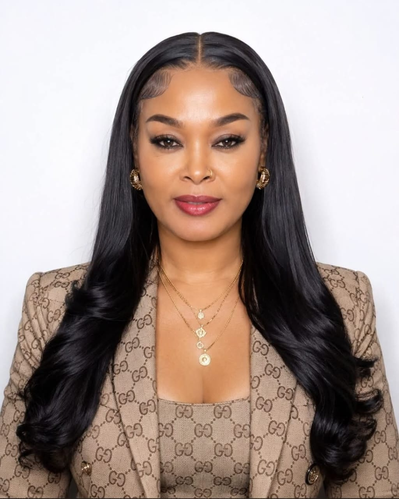

Dr. Gloria N. Raphael is an accomplished Human Resource Professional, Consultant, Trainer, and Strategic HR Partner passionate about people development, organizational growth, leadership development, and building effective workplace systems.
With extensive experience in Human Resource Management, recruitment, employee development, performance management, HR policies, and organizational development, Dr. Gloria helps individuals and organizations achieve excellence through strategic people management solutions.
I believe that people are the greatest asset of every organization. Developing people, strengthening systems, and creating positive workplace cultures are essential for sustainable success.